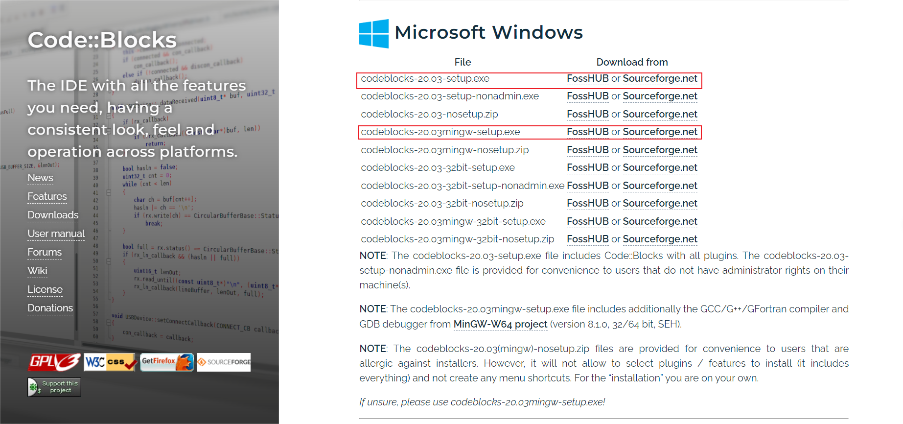
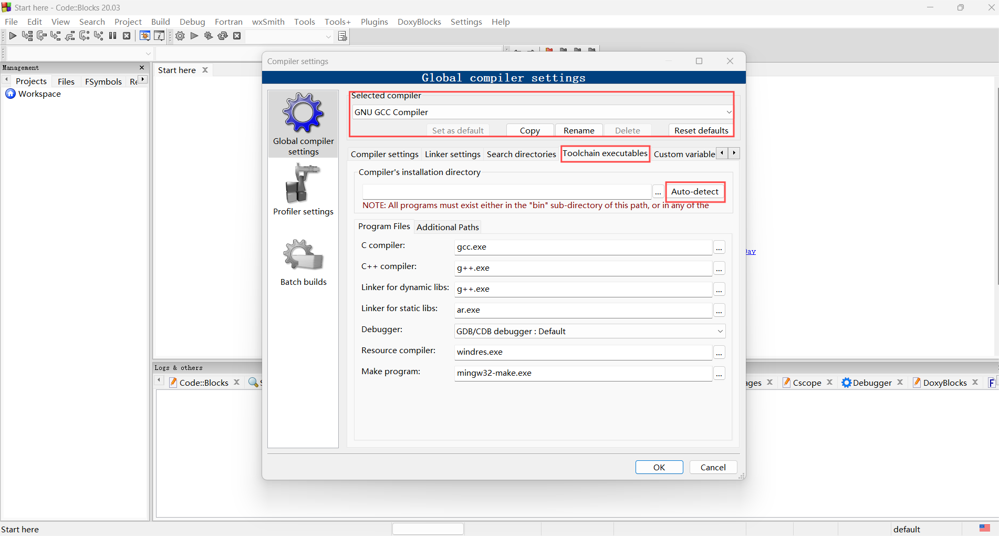

Codeblocks
简介
Code::Blocks 是一个使用 C++ 开发的开源集成开发环境（IDE），采用 wxWidgets 作为图形界面库．该项目始于 2001 年，目前由官方社区维护，主要用于 C、C++ 和 Fortran 等编程语言的开发．[^ref1]
优点：
-
轻量和高效：Code::Blocks 资源占用少且启动迅速，适合资源有限的环境以及偏好轻量级 IDE 的开发者，也适合入门级开发者学习和使用．
-
跨平台兼容性：支持 Windows、Linux 和 macOS 等多种操作系统，提供了一致的用户体验，使得开发者可以无缝地在不同平台上工作．
-
广泛的编译器支持：支持包括 GCC、MSVC (Microsoft Visual C++)、Digital Mars 和 Borland C++ 5.5 在内的多种编译器，允许开发者根据项目需求选择最合适的编译工具．
缺点：
-
功能范围有限：相比于 CLion 或 Eclipse 等 IDE，内置功能和工具较为基础，可能不足以满足复杂项目的需求．
-
插件生态较弱：尽管支持插件扩展功能，但第三方插件数量和质量有限，插件生态相对较弱．
安装
参见 Code::Blocks 官方网站，选择下载二进制安装程序（Binary Release），或者下载源代码编译安装（Source Code），然后根据需求和操作系统选择合适的安装程序，按照安装向导完成安装即可．
???+ note "下载包含 MinGW 的安装包"
对于 Windows 用户，如果不希望手动配置编译器，建议下载包含 MinGW 的安装程序，例如 codeblocks-xxxxmingw-setup.exe，该版本已经包括了 GCC 编译器，无需额外安装和配置即可开始开发 C 和 C++ 项目．

配置
如果安装时选择了不包含 MinGW 的安装程序，或者需要使用其他编译器，则需要手动安装和配置编译器，然后设置 Code::Blocks 以使用该编译器．
工具链安装
参考本站的 编译器 安装指南，下载并安装你需要的编译器．
工具链设置
当第一次启动 Code::Blocks 时，软件会自动扫描系统中已安装的编译器，如果没有找到编译器，可以通过以下步骤手动添加：
- 打开 Code::Blocks，点击菜单栏的
Settings -> Compiler，打开编译器设置对话框（如下图所示）．
- 在
Selected compiler下拉框中选择需要配置的编译器，例如GNU GCC Compiler． - 在
Toolchain executables选项卡中，单击Auto-detect按钮，Code::Blocks 将自动扫描系统中已安装的编译器． - 如果自动扫描失败，你可以手动设置编译器路径．在
Compiler's installation directory中输入编译器的安装路径，例如C:\MinGW\bin． - 设置完成后，点击
OK保存设置，现在你可以使用该编译器来编译和运行项目．
使用
Code::Blocks 内置项目管理器，支持用户自定义构建项目，你可以在 Project -> Build options 中设置编译选项，选择编译器、编译选项、链接选项等，也可以在 Project -> Properties 中设置项目属性，例如项目名称、路径、文件列表等．
??? note "配置 Makefile"
Code::Blocks 默认不需要编写 Makefile，如果需要使用自定义的 Makefile，可以在 Project -> Properties 中勾选 This is a custom Makefile 选项，然后在 Project -> Build options 中设置 Makefile 的路径．
创建项目
Code::Blocks 支持的编程语言包括 C、C++ 和 Fortran 等，当启动 Code::Blocks 后，可以通过 File -> New -> Project 创建新项目，选择项目类型和模板，然后按照向导的指示，设置项目名称、路径、编译器等，最后点击 Finish 完成项目创建．
Code::Blocks 也支持单文件的编译和运行，可以通过 File -> New -> File 创建新文件，编写代码并保存后，点击工具栏上的 Build and run 按钮，或者按下 F9 键，自动编译和运行当前文件．
构建和运行
以一个简单的 Console Application 项目为例，接下来介绍如何构建和运行项目：
- 项目创建完成后，你会看到一个默认的
main.cpp文件，你可以在该文件中编写代码，然后保存文件． - 编写完代码后，点击工具栏上的
Build and run按钮，或者按下F9键，Code::Blocks 将自动编译和运行项目． - 编译和运行后，输出窗口中会显示程序的输出结果，你可以在输出窗口中查看程序的输出，根据需要调整代码．
- 如果只需要编译项目，而不运行，可以点击工具栏上的
Build按钮，或者按下Ctrl + F9键，Code::Blocks 将只编译项目，不运行程序．
调试
Code::Blocks 内置了调试器，你可以在 Debug 菜单中设置和启动调试器，帮助你定位和解决程序中的错误．
同理，以一个简单的 Console Application 项目为例，接下来介绍如何调试项目：
- 设置断点：在需要调试的代码行左侧单击鼠标左键，设置断点，程序将在断点处停止执行．
- 启动调试器：点击工具栏上的
Debug按钮，或者按下F8键，Code::Blocks 将自动编译并启动调试器． - 调试程序：在调试器中，你可以单步执行程序，查看变量值、调用栈等，帮助你定位和解决程序中的错误．
- 停止调试：调试完成后，你可以点击工具栏上的
Stop按钮，或者按下Shift + F8，停止调试器．
自定义设置
Code::Blocks 提供了丰富的设置选项，可以帮助调整编辑器的行为，以下是一些常用的设置：
界面设置
- 在
Settings -> Editor中，可以设置编辑器的字体、颜色、缩进、自动补全等选项． - 在
Settings -> Environment中，可以设置 Code::Blocks 的全局行为，例如自动保存、自动备份、自动提示等． - 在
View菜单中，可以调整编辑器的布局，例如打开/关闭文件浏览器、工具栏、状态栏、输出窗口等．
插件设置
Code::Blocks 支持插件来扩展功能，可以通过 Settings -> Plugins 查看和安装可用的插件，例如 DoxyBlocks、wxSmith 等，以下是一些常用的插件：
- DoxyBlocks：著名的文档生成工具 Doxygen 的集成插件，可以直接在 Code::Blocks 中生成项目文档．
- wxSmith：用于开发 wxWidgets 应用程序的插件，提供了可视化的界面设计工具，允许快速创建和布局 GUI 界面，简化开发流程．
- Thread Search：支持多线程搜索的插件，可以在项目中快速搜索和替换符号和文本，适用于大型项目的开发．
插件的安装和使用方法请参考 Code::Blocks 的插件文档，根据插件的需求和功能，选择合适的插件安装和使用．
???+ warning "注意" Code::Blocks 的插件相对单一和基础，且大部分插件已经集成到软件中，第三方插件的数量和质量有限，建议根据实际需求选择合适的插件．
快捷键设置
你可以通过 Settings -> Editor -> Keyboard shortcuts 选项卡查看和修改快捷键设置，根据自己的习惯调整快捷键．
以下是一些常用的快捷键：
| 功能 | 快捷键 |
|---|---|
| 新建文件 | Ctrl + Shift + N |
| 打开文件 | Ctrl + O |
| 保存当前文件 | Ctrl + S |
| 全部保存 | Ctrl + Shift + S |
| 关闭当前文件 | Ctrl + W |
| 关闭所有文件 | Ctrl + Shift + W |
| 构建和运行当前项目 | F9 |
| 只构建当前项目 | Ctrl + F9 |
| 只编译当前项目 | Ctrl + Shift + F9 |
| 运行当前项目 | Ctrl + F10 |
| 调试：开始/继续 | F8 |
| 调试：停止 | Shift + F8 |
| 调试：下一步 | F7 |
| 调试：进入 | Shift + F7 |
| 调试：跳出 | Ctrl + F7 |
| 调试：切换断点 | F5 |
| 查找 | Ctrl + F |
| 查找并替换 | Ctrl + R |
| 转到指定行 | Ctrl + G |
| 转到匹配的括号 | Ctrl + B |
| 全屏切换 | F11 |
| 开关所有折叠 | Ctrl + Shift + - |
| 展开所有折叠 | Ctrl + Shift + + |
| 选择下一个匹配项 | Ctrl + E |
| 选择跳到下一个匹配项 | Ctrl + Shift + E |
参考资料与注释
[^ref1]: Code::Blocks - 维基百科